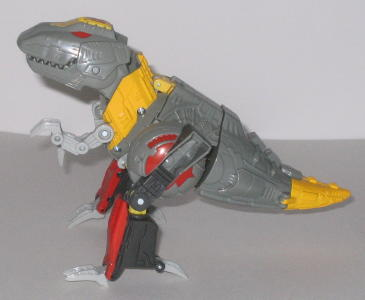
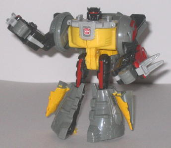
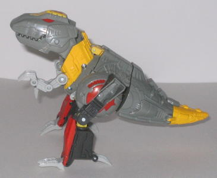
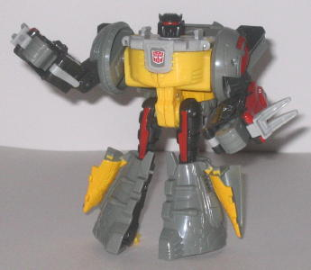
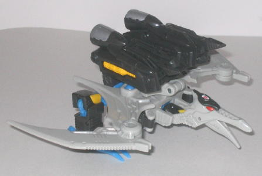
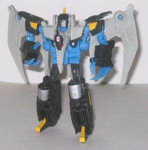
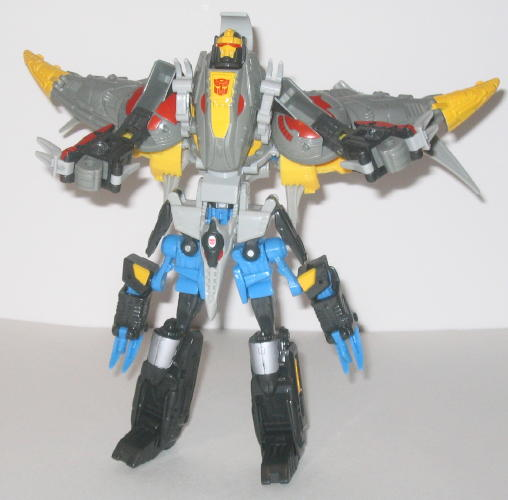

 
Allegiance : Autobot
Size : Deluxe
Difficulty of Transformation : Medium
Color Scheme : Gray, light gray, yellow, metallic red, and very dark gray
Individual Rating : 7.3
Set Price
: $20 (U.S.)
Overall Rating
: 6.6
(An interesting note about this set; these
molds were originally going to be used for
Universe
as the first brand-new molds for the line, but Hasbro eventually decided
to release the toys in Energon, to make sure the new molds got better distribution.
So that's why these two toys don't have any Powerlinx ports or Energon
spark crystals, and even though they combine, they combine in a different
manner than the other Energon Autobots.)
 Grimlock
Grimlock


Allegiance
: Autobot
Size
: Deluxe
Difficulty of Transformation
: Medium
Color Scheme
: Gray, light gray,
yellow, metallic red, and very dark gray
Individual Rating
: 7.3
Grimlock is back, and
in a form that is very similar to his G1 incarnation. Grimlock is, again,
a mechanical T-rex, and his overall look-- and even some his paint apps--
are very close to his G1 toy. It pretty much goes without saying that he
also has better articulation-- in this mode, he can move at the shoulders,
hips (at two places), knees (at two places), his claws (but the front two
on each foot-- even though, anatomically speaking, T-rexes have three toes--
move as one), his neck (at two points), and his mouth can open and close,
too. So he has a pretty good range of articulation for a T-Rex Transformer.
Grimlock also has great mold detailing-- there's little pipes and other
stylized detailing all over his form. However, Grimlock does have a few
slight proportional problems in this mode. For one, his legs really stick
out from the rest of the body, and look really odd because of it. The dinosaur
head is also definitely less menacing than his G1 version's-- the teeth
are smaller, and the head is bigger when compared to the rest of the body,
making Grimlock look more like a mechanical baby T-Rex, and thus less impressive.
His colors are also rather dull, even if they are taken from his G1 incarnation--
yellow, gray, and red just doesn't catch the eye as much as 80-90% of the
other Energon toys. His paint apps are also rather unimaginative, and,
with the exception of the apps on the hips, they don't really take advantage
of all the spectacular mold detailing Grimlock has. Another noticeable
downside to this mode is that, if you raise Grimlock's head upwards, you
can easily see the Mega Dinobot gestalt head just sticking out the neck
there, just not even trying to stay hidden... But still, overall, it's
a decent mode.
Grimlock's robot mode
is wholly disappointing. It does make a major nod to the G1 version-- the
transformation is pretty much exactly the same as G1 Grimlock's-- but the
proportions are horrendous. For one thing, the chest is appropriately
wide, but then all of a sudden, it shrinks down to about the width of one
of his LEGS. It looks ridiculous. He also has really skinny upper legs
and large lower legs, as as well as overly long arms. In addition, his
head is rather stubby and a little dorky-looking, even though it does have
a few War Within Grimlock nods with the faceplate faceplate design and
whatnot. When it's all put together, it really makes this version of Grimlock
look decidedly less menacing than his G1 self. Another downside is that
his fists don't really have much detailing on them to identify the individual
fingers, so they look more like big discs with holes in them rather than
actual fists. The holes aren't big enough to hold Energon weapons, either--
which is a pretty big minus, given that Grimlock doesn't come with a single
weapon himself. As a side effect of his gestalt transformation, Grimlock's
hips also tend to come apart easier than I'd like. Grimlock does have a
few positives in this mode, however. For one thing, he has a couple of
nice
War Within Grimlock
detailing nods,
such as in the aforementioned faceplate design and the "jaw" design on
his lower chest. He also has pretty good articulation-- he can move at
the neck, shoulders (at two points), elbows (at two points), hips, and
knees. And, though he does have a rather large backpack made up of his
dinosaur head, neck, and arms, it doesn't really get in the way of his
articulation, nor does it render him unstable, due to his large feet. But
it's not nearly enough to save this mode from being seen as what it is--
pretty poorly designed.
 Swoop
Swoop


Allegiance
: Autobot
Size
: Deluxe
Difficulty of Transformation
: Easy
Color Scheme
: Light gray, very dark
gray, light pale blue, and some yellow, metallic red, and silver
Individual Rating
: 6.8
Swoop is another G1 Dinobot
that has been updated for the Energon line. Unfortunately, Swoop suffers
a poor design just like Grimlock. His beast mode is downright horrible.
Oh, it does have some nice parts-- the angular, razorblade-like wings look
very cool, and he has great mold detailing. Oh, and his articulation is
decent-- he can move at the neck, mouth, wings (at two points), and the
legs. His foot claws can also move downwards into a grabbing position if
you don't want him to stand on them. Unfortunately, that's about it when
it comes to the positives of this mode. The legs are overly short and stubby,
with no ankle articulation, and the hips don't really lock into any position
like you think they would. The legs also seem a little too far back when
compared to the rest of the body-- they're barely in front of Swoop's tail,
if you look at him from a top or side view. Swoop's neck also has no mass
at all-- it's two thin pieces of plastic at the sides, while if you look
at it from the top, the rest of the neck is completely hollow. They try
to fill it up with the back of Swoop's robot head, but it only fills up
about half of the empty space, and given that the head is a different color
than its surrounding parts, it tends to stick out a bit, too. The neck
area was really, really poorly designed on this toy. My biggest problem
with the mode, though, is that it's so darn obvious that Swoop's robot
legs are
just hanging off his pterodactyl back, here. The designers tried
(and failed) to disguise it by molding small thrusters on the back of the
legs, but the legs themselves are far too big to be considered as thrusters,
not to mention the fact that the bottom of the feet are just out in plain
side-- I wish they had molded some guns onto the feet to help them blend
in a bit more, or something. As it is, it just looks lazy, especially since
it wouldn't have been too hard to integrate these legs into the main pterodactyl
body, even if you just modified the design a little. And Swoop also shares
Grimlock's problem of having rather dull primary colors, only more so--
and that light blue doesn't really fit in that well with the gray. Swoop
also doesn't have enough paint detailing on him-- it really would've helped
on the wings, especially.
Swoop's robot mode is
better. Though he still suffers from some dull colors, his proportions
are pretty good, and he's nearly extra-free. The overall look is also somewhat
similar to G1 Swoop's, what with the wings on the back (which I really
like), the pterodactyl head on the chest, and the head design. Though the
head design isn't really as exciting this time, given the fact that the
expression molded on Swoop's face makes it look like even HE doesn't like
the way he looks, and the pterodactyl crest on his head is small, undetailed,
and rather dorky-looking when compared to G1 Swoop's. He also has big gray
pieces of plastic on the sides of his head, giving him practically no neck,
which certainly doesn't help the look. Another slightly annoying aspect
of this mode is that the plastic pads above his shoulders don't connect
at all with the latter, and the shoulders themselves don't lock in place,
so trying to move his shoulders up there always results in a few other
parts moving when you don't want them to. Another minor downside is that
there's a bit of an unsightly gap between his pterodactyl head-chest and
his robot head, which certainly isn't desirbable. He doesn't have hands,
but he's a Dinobot, he's made for wrecking things, so those big sharp claws
of his don't bother me. Swoop also has good articulation; he can move at
the head (side-to-side), shoulders (at two points), elbows, claws, hips,
knees, and ankles. And there's nothing wrong with his legs-- they tend
to keep him stable, and they don't look really out of proportion or anything.
 Mega
Dinobot (Combined Form)
Mega
Dinobot (Combined Form)

Difficulty of Transformation
: Hard
Individual Rating
: 5.8
I'd be willing to partially overlook some of the major flaws in Grimlock & Swoop if it at least meant a good combined mode, but unfortunately, it doesn't. While not the worst thing I've ever seen, Mega Dinobot could be a lot, LOT better. For one thing, Swoop's arms just hang off the bottom half of his body, without even trying to look like anything. Guns, thrusters, anything would have been better than just... arms. But there they are, with no way to hide them from view. The legs also seem a little short proportionally when compared to Mega Dinobot's overall structure. Hasbro tried to elongate them a little big by splitting Swoop's main body in half, but those parts don't look like legs at all, just... Swoop's body split in half. At least larger feet swing down over Swoop's smaller ones to give Mega Dinobot a little more stability. Grimlock forms a slightly better upper body, as the tyrannosaurus tail halves make decorative shoulders, and the arms are solid, if not a bit short. What I really don't like, though, is how the gestalt head doesn't really lock into place anywhere, so it just hovers a little above the tyrannosaurus head-chest. The big curved panel behind the head doesn't help the look much, either. The look of the head itself is alright, though a bit too much yellow is used-- it's been influenced heavily by the War Within Grimlock design, right down to the "teeth" designs on the faceplate, so it's a great fan nod. Probably my single biggest complaint with Mega Dinobot is that he doesn't hold together very well-- the instructions on how to combine the two individual parts are very confusing, and even when you do manage to get it done correctly, you find out that there's just a curved tab on the backside holding the gestalt together. It won't fall apart by itself or anything, but if the toy happens to fall down, it'll definitely split in two. More thought should definitely have been put into this combination.
At first when I heard about brand-new versions of Grimlock and Swoop, I was pretty excited. But these two are definitely a pretty big letdown. Numerous proportion problems plague Grimlock, and although Swoop's robot mode is pretty good, his beast mode is horrendous. And they both have rather dull colors. Plus, Mega Dinobot is a pretty goofy-looking gestalt that doesn't fit together well, either. Apparently, Grimlock & Swoop here were the only toys released in Energon that were designed almost entirely by Hasbro, with no real involvement by Takara. Judging from these two, I think it's better to stick with the Japanese designers when it comes to the toys-- sorry, Hasbro, but these just don't cut the mustard. Probably my least recommended Mega-priced (new mold) Energon figure in the line.
Grimlock Tech Specs:
Strength: 10.0
Intelligence: 7.0
Speed: 3.0
Endurance: 10.0
Rank: 9.0
Courage: 10.0
Fireblast: 8.0
Skill: 10.0
Swoop Tech Specs:
Strength: 6.0
Intelligence: 6.0
Speed: 8.0
Endurance: 9.0
Rank: 5.0
Courage: 7.0
Fireblast: 7.0
Skill: 7.0
Review by Beastbot